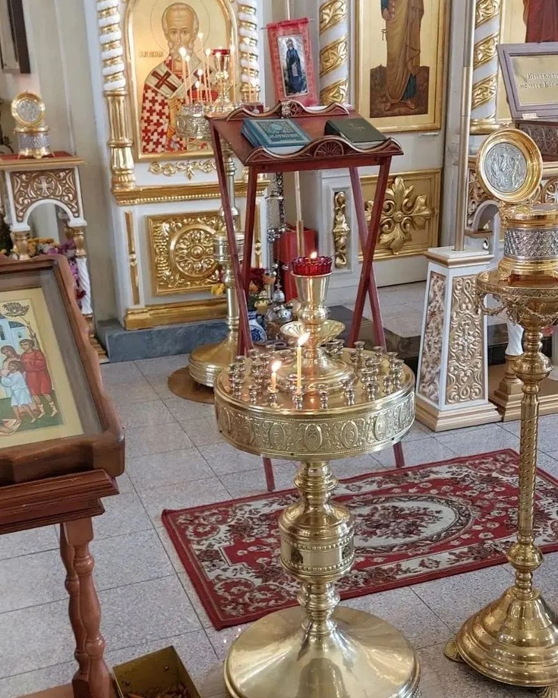
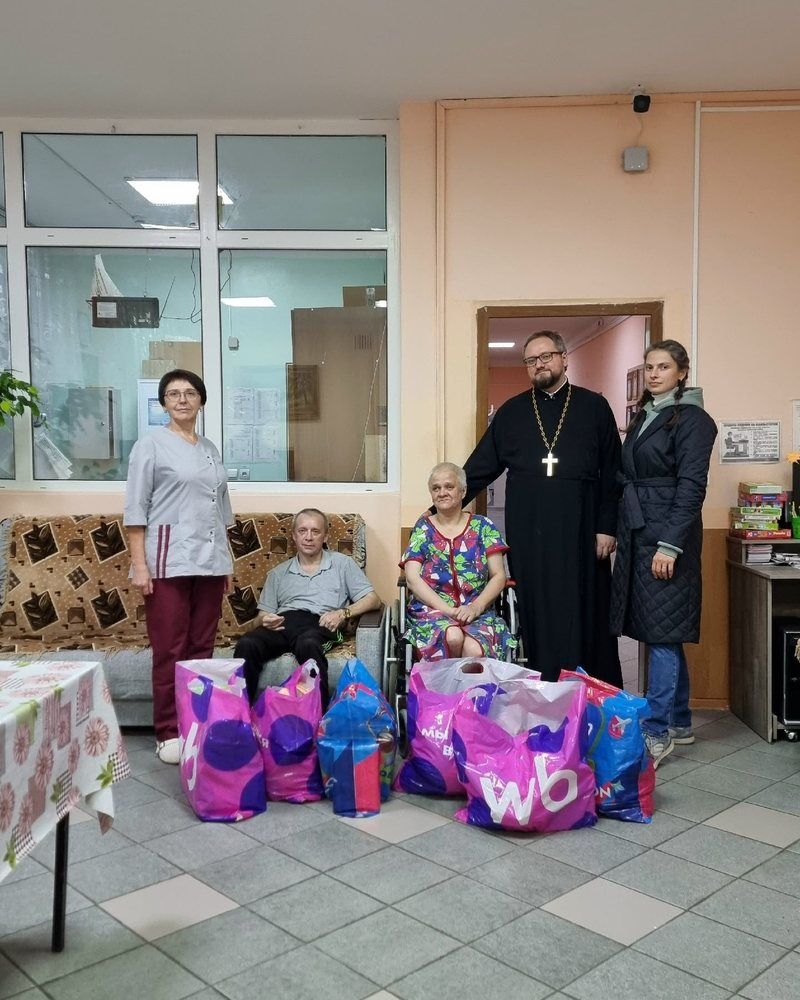

Иконы и мощевики
Частицы мощей святителя Николая, Луки Крымского, Димитрия Ростовского и других святых.
Все святыниМосальск · Калужская область
Исторический собор в центре города. Здесь совершаются богослужения, хранятся святыни и идёт приходская жизнь.
Ближайшее богослужение
Воскресенье, 9:00 — Литургия
Точное время — в расписании и группе ВКонтакте
Храм открыт
Ежедневно, 9:00–13:00
Богослужения — по расписанию

О соборе
Свято-Никольский собор — памятник архитектуры классицизма и один из символов города. Каменный собор заложен в 1806 году на средства купца и мецената Антона Хлюстина и освящён в 1818 году.
В советские годы храм закрыли и разобрали; уцелела колокольня. В 1999–2001 годах собор воссоздали по историческому проекту, а внутреннее убранство завершили к 2021 году.
Святыни
В соборе находятся частицы мощей святителя Николая Чудотворца, святителя Луки Крымского, святителя Димитрия Ростовского, апостолов Андрея Первозванного и Матфея, преподобного Серафима Саровского и других святых.
Частицы мощей святителя Николая, Луки Крымского, Димитрия Ростовского и других святых.
Все святыни
Вышита в мастерской Троице-Сергиевой лавры. Находится в специальной гробнице в центральном приделе.
Подробнее
В октябре 2026 года собору передали старинный образ — семейную реликвию рода Хабаровых.
Новость епархииПриход
Воскресная школа, библейский кружок, библиотека, социальное служение и паломники.

Приход посещает дом-интернат «Уют» и центр «Сила единства», помогает многодетным семьям и участникам СВО.
Подробнее
Литургия, всенощное бдение, молебны и панихиды. Исповедь и часы перед Литургией — с 8:50.
РасписаниеДети 6–13 лет. Занятия по воскресеньям после Литургии, начало в 10:45. Музыкальный кружок и детская библиотека.
Как записатьсяНовости
Икону передал Ярослав Николаевич Хабаров — потомок рода Хабаровых. Образ займёт место в соборе.
Читать на сайте епархииНастоятель собора иерей Владислав Береговой совершил заупокойную панихиду на старом кладбище.
Смотреть во ВКонтактеИерей Владислав Береговой навестил жителей дома-интерната и передал подарки ко Дню пожилого человека.
Смотреть во ВКонтактеКак добраться
Советская улица, 15А. Рядом остановки «Автостанция Мосальск» и «Мосальск — Автовокзал, 38».